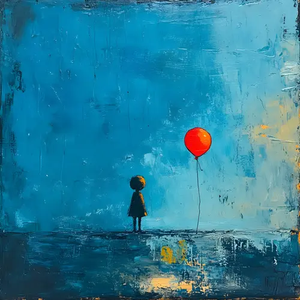

A showcase of videos that inspire ProductivityandMental Growth
Nurul Hayati
Mahasiswa | Universitas Royal
Tentang Saya
Saya adalah mahasiswa di Universitas Royal dengan minat besar pada pengembangan diri. Selamat datang di koleksi video dan musik ini,
sebuah ruang yang saya susun untuk menghadirkan inspirasi bagi produktivitas dan pertumbuhan mental.
Setiap video dan musik yang dipilih di sini bertujuan untuk memicu ide, membangkitkan semangat, dan membuka perspektif baru dalam perjalanan pengembangan diri.
Melalui tayangan-tayangan ini, saya berharap penonton tidak hanya terhibur, tetapi juga terdorong untuk mengeksplorasi potensi diri,
meningkatkan fokus, dan menemukan motivasi dalam kehidupan sehari-hari.
"4 Langkah Self Improvement Tanpa Drama".
Video ini membahas cara-cara praktis dan efektif untuk meningkatkan
diri tanpa perlu drama atau pembenaran berlebihan. Konsep yang
disampaikan dirancang untuk membantu pemirsa fokus pada
langkah-langkah nyata dalam pengembangan diri
"Kamu Malas Tapi Harus Produktif? Ini Rahasia Biar Otak Ngegas Lagi!". Video ini membahas
fenomena rasa malas dan bagaimana cara mengakali otak agar mau mulai bekerja dan menjadi produktif,
meskipun tubuh sedang "ogah-ogahan. Kunci produktivitas adalah "Gerak dulu, mood nyusul"
"Kamu Nggak Bodoh, Cuma Salah Cara Belajar (Cara Mengingat Lebih Lama Tanpa Jadi Jenius)".
Video ini membahas alasan mengapa seseorang sering lupa meskipun sudah belajar berjam-jam dan
menyajikan berbagai teknik belajar efektif yang terbukti secara ilmiah agar materi bisa
menempel lebih lama di otak.
"Satu Kesalahan Terbesar Dalam Belajar". Video ini membahas
kesalahan fundamental yang paling sering dilakukan dalam proses belajar,
yaitu terlalu fokus menghafal daripada memahami. Video ini juga menjelaskan
pentingnya ilmu dasar dan bagaimana semua mata pelajaran di sekolah saling berkaitan dan
relevan untuk bertahan hidup di dunia nyata.
"Satu Kesalahan Terbesar Setelah Lulus Sekolah". Video ini membahas mengenai
kesalahan pola pikir yang sering terjadi setelah seseorang lulus sekolah atau kuliah,
yaitu berhenti belajar dan merasa ilmu yang dipelajari menjadi sia-sia di dunia kerja. Lulus sekolah bukanlah akhir,
melainkan awal dari perjalanan belajar yang lebih luas di dunia kerja.
"90% Pekerjaanmu Sebenarnya Tidak Penting". Video dari kanal Bahas ini membahas
tentang konsep Deep Work yang berasal dari buku karya Cal Newport,
dan bagaimana mengaplikasikannya untuk meningkatkan produktivitas
dan kualitas kerja. Deep Work didefinisikan sebagai kemampuan
untuk fokus 100% pada satu hal tanpa gangguan, yang menghasilkan
karya berkualitas tinggi, sulit ditiru, dan meningkatkan keahlian Anda
🎧 Inspiring Playlist
Temukan musik dan audio yang menenangkan pikiran dan meningkatkan fokusmu.

Foreign
Funky
Found You
Ocean Vibes
Lights
Oasis
Ayo Terhubung!
Punya feedback, pertanyaan, atau ingin berbagi video inspiratif? Mari Berbagi Inspirasi!
Jangan ragu kirim pesan jika Anda punya ide, insight baru, atau sekadar ingin menyapa.

.webp)
.webp)
.webp)
.webp)
.webp)